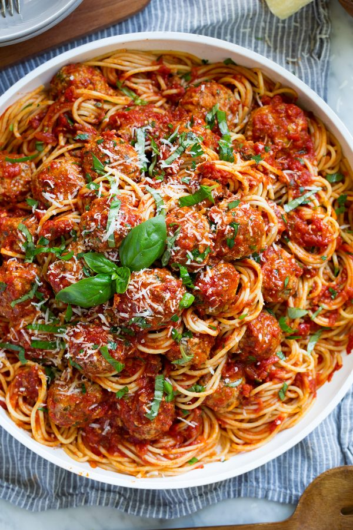

Meatball Recipe

Description
A meatball recipe that rivals that of your favorite Italian restaurant! These meatballs always come out amazingly tender, perfectly moistened, deliciously flavorful and they're always sure to impress! Makes for such a classic, comforting dinner.
Ingredients
- 2 cups (5.2 oz) fresh bread crumbs*
- 3/4 cup whole milk, then more if needed
- 1 lb. 85% lean ground beef**
- 1 lb. ground pork
- 2 large eggs
- 1/2 cup finely minced yellow onion***
- 2 garlic cloves, minced (2 tsp)
- 2 Tbsp finely chopped fresh basil
- 2 Tbsp finely chopped fresh parsley
- 1 Tbsp finely chopped fresh oregano
- 1 cup finely shredded Parmesan cheese
Salt and freshly ground black pepper
- 3/4 cup olive oil, only if using the fried method
Instructions
- In a large mixing bowl stir together bread crumbs and milk while adding more milk 1 Tbsp at a time to moisten bread fully. Let rest while you prep ingredients (or at least 5 minutes).
- To breadcrumb mixture add beef, pork, eggs, onion, garlic, basil, parsley, oregano, parmesan and season over top of ingredients evenly with salt and pepper (I only use 3/4 tsp salt if I plan on using jar sauce to coat since it can be salty).
- Gently toss mixture and break meat up with fingertips until ingredients are evenly mixed.
- Shape mixture with greased hands into even size meatballs, about 1 1/4-inches each (or about 38g).
- To pan fry meatballs pour 3/4 cup olive oil into a 12-inch non-stick skillet, heat over medium heat.
- Cook meatballs in 3 batches (so they aren't overcrowded) until golden brown on bottom, about 4 - 6 minutes. Then turn to opposite side and cook opposite side until golden brown. Transfer to paper towels to drain.
- Transfer meatballs to warmed marinara sauce (see note 5) in a large pot, submerge in sauce. Cover and simmer over low heat until meatballs are 165 degrees in center, gently tossing meatballs occasionally, about 15 - 20 minutes.
Back to Home
Back to Top